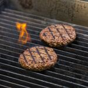

CARMEN TÍA ALIA (La Abuela)
CARMEN TÍA ALIA (La Abuela)

CARMEN TÍA ALIA (La Abuela)
Los british scones son unos tradicionales panecillos dulces que, a lo largo y ancho del Reino Unido, se sirven con el té de media tarde. Se preparan con ingredientes muy básicos y su masa no requiere amasado ni reposo, así que son muy fáciles y rápidos de preparar.
El punto de sabor a mantequilla de los scones británicos los hace deliciosos. Se pueden consumir tal cual, aunque lo típico es servirlos con mermelada y clotted cream. La masa se puede enriquecer con pasas o arándanos, pero a nosotros nos gusta la versión básica. Os mostramos cómo se hacen.
Sobre la clotted cream. Esta es una nata coagulada, densa y sedosa, con un elevadísimo porcentaje de materia grasa (55%). Es originaria de los condados de Devon y Cornualles, al suroeste del Reino Unido, y encontrarla fuera de sus fronteras es muy difícil. Si no la encontráis, la podéis sustituir por crême fraîche, nata montada o, sencillamente, prescindir de ella.
 Europa vota prohibir llamar “hamburguesa” a los productos vegetales: y toda la industria tiene intereses en uno u otro bando